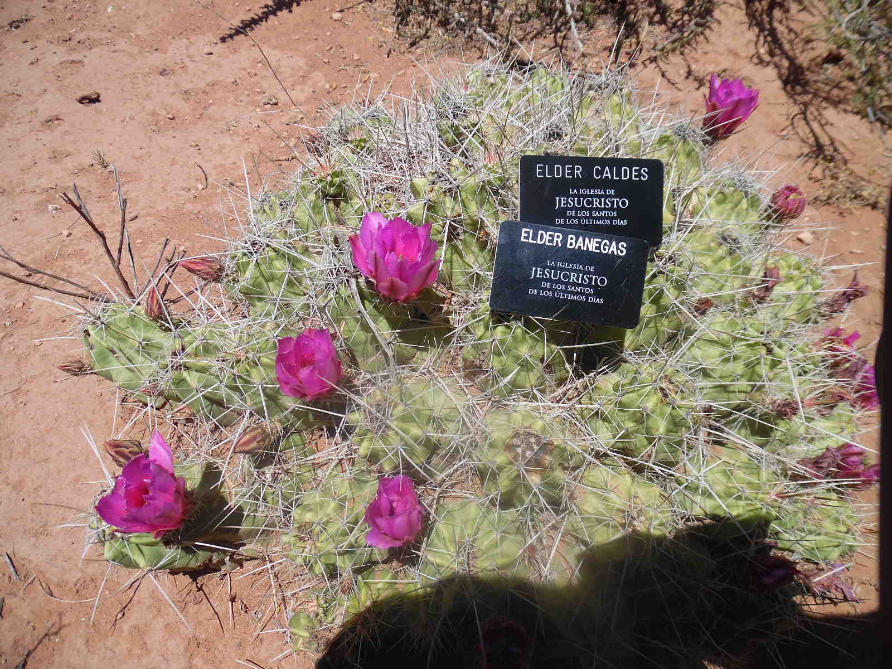

Called to serve:
This website is about my brother's weekly mission adventures and experiences in Lubbock, Texas for The Church of Jesus Christ of Latter-day Saints. To also share what missionaries do and teach to others on a daily basis.
Age Change:
The previous ages at which a missionary can serve:
- Young men: 19 years old
- Young Women: 21 years old
In the October 2012 General Conference, Prophet Thomas S. Monson, president of The Church of Jesus Christ of Latter-day Saints, made a statement concerning the age at which a missionary can serve:
- Young men: 18 years old
- Young men: 19 years old
Able worthy young men and women who have the desire to serve may be reccommened for missionary service (Monson, 2012).

Homework:
- Mobile Analysis Document
- Design Principles Document
- Practice Page
- Initial Planning Document
- Layouts Test
- Responsive Media
- JQuery Assesment
- Search bar
Presentation:
Weather Pages:
Json Weather:
These will take you to my assignments from the BYUI Fall 2016 CIT230 assignments.